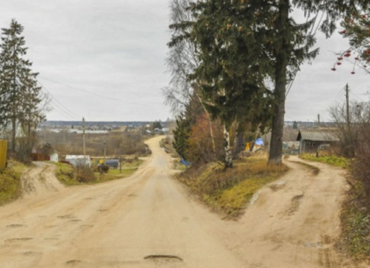
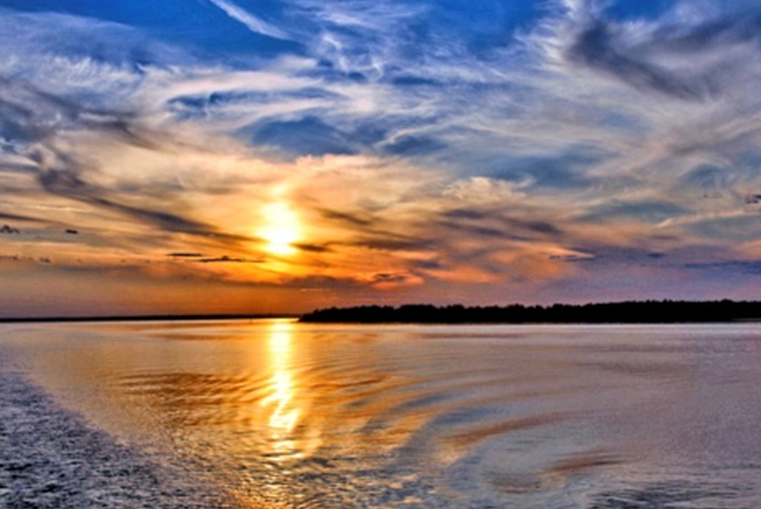
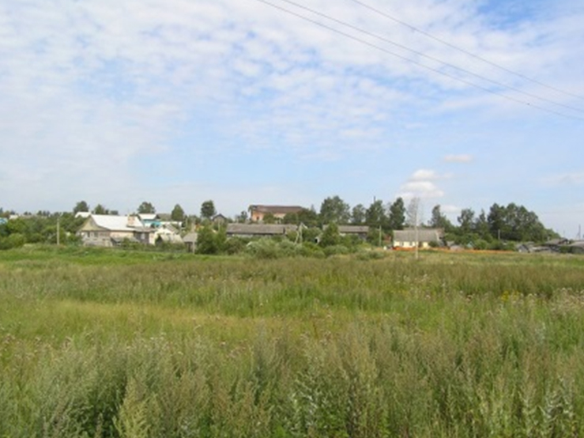

Кесова гора
Посёлок расположен на берегу реки Кашинки (левый приток Волги), на востоке области, в 32 км от Кашина, в 50 км от Бежецка, в 180 км от Твери недалеко от границы с Ярославской областью. Также рядом протекает река УСА, Рыбинское водохранилище, река Молога, река Кашинка. Ры́бинское водохрани́лище (разг. Ры́бинское мо́ре) — большое водохранилище на реке Волге и её притоках Шексне и Мологе. Расположено в основном в Ярославской области, на северо-западе, частично также в Тверской и Вологодской областях.


